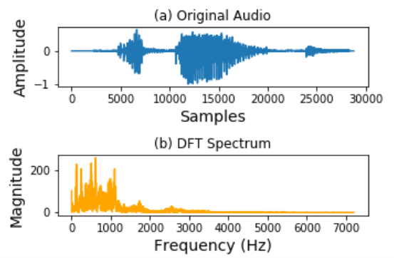
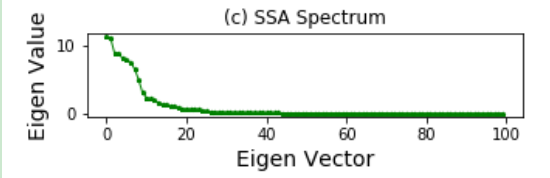
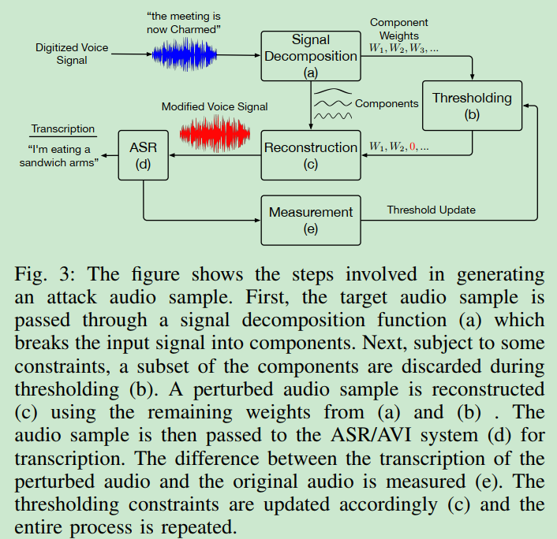
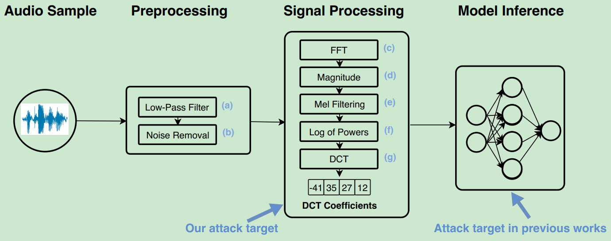
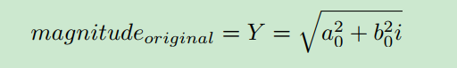
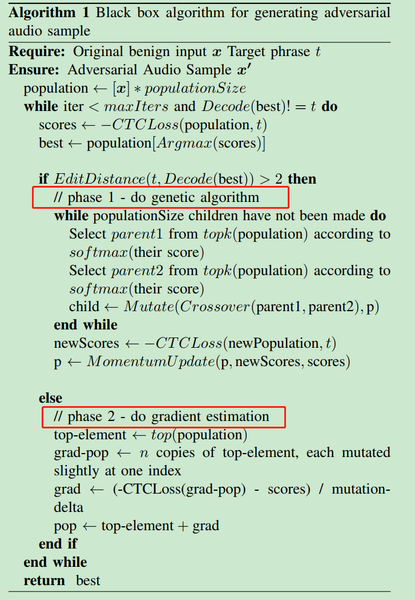
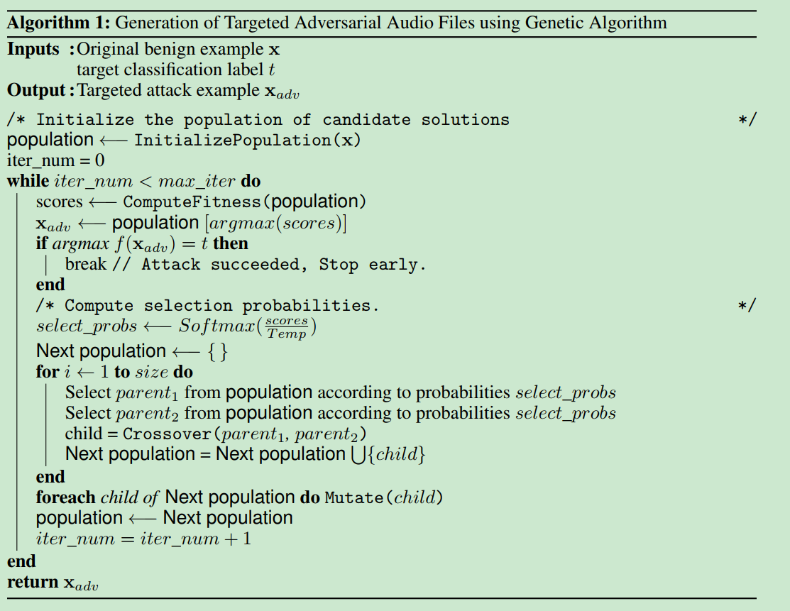

语音对抗黑盒方法
总结
在tx实习一个月，这一个月主要在研究针对语音的对抗攻击，前期阅读了目前为止一些流行的工作，包括了白盒和黑盒，在后期进行实验复现的时候，mentor主要还是想聚焦在黑盒场景下，不过确实感到黑盒才是在现实世界中更有意义的攻击。目前主要跑了以下几种黑盒的攻击：
1. Hear “No Evil”, See “Kenansville”: Efficient and Transferable Black-Box Attacks on Speech Recognition and Voice Identification Systems
本文的攻击使用了信号处理转换的手法来改变音频样本的表现形式，分为两类，data-independent和data-dependent。这两种方法的思路都是做原始样本—>提取特征—>特征剪枝—>求逆返回样本。 假设是ASR识别所需要的关键成分对人耳的听感并不重要。将关键成分抹除达到untarget攻击。是一种查询式的黑盒攻击，需要query的次数较少。因此比较实用。
1）data-independent： 不同的信号特征提取方法会提取出不同的音频特征，这种方法对DFT（离散傅里叶变换）特征变换过程进行干扰，因为DFT是一种通用的语音处理工具，并且也是MFCC其中的一步。对DFT过程进行扰动，会对后续的一系列处理都产生影响。
攻击过程：实质上就是对某一阈值以下的频率进行置零处理，直至找到最优的那个阈值，最大程度的去除频率信息并且保障语义最小出错。阈值的优化过程采用了二分法。文章中说，这样做能够把模型决策的特征给扰动，并且不太影响听觉的感知。实质上，攻击复现后听感还是有一定的影响。若当前阈值下translate出错，则降低阈值，反之则提升阈值。

2）data-dependent: SSA方法：data—->特征向量，特征值小的特征向量蕴含的信息较少。实际实验中，这个攻击效果不如上面，但是对音频的听感扰动较小。

3）overview

4）攻击效果
在腾讯云、Google、IBM、百度云等多个speech API进行测试，都能产生误转录。不同厂商的鲁棒性不同。同时能产生攻击效果的对抗样本也存在一定程度的质量下降。文章中说可以只针对部分区间内的因素进行扰动，可以提升扰动后音频的质量。在实验中，只是跑了一下对整体音频区间的扰动。https://github.com/kwarren9413/kenansville_attack
5）一些思考
可以只针对某部分因素或者单词进行扰动，不需要全部进行扰动，但是存在的问题是这部分扰动的效果相比于clean部分很明显，虽然只扰动部分能够对后续的预测结果产生影响，但是很容易引起人的怀疑。
2. Practical Hidden Voice Attacks against Speech and Speaker Recognition Systems
https://github.com/hamzayacoob/VPSesAttacks

宗旨： 在尽量不影响音频特征提取结果的情况下，最大程度的降低音频的听感，攻击发生在黑盒场景下，可以实现语义信息的隐藏。 翻转能够使得帧内的频谱经过FFT变换后尽可能不变，使ASR翻译正确，同时翻转能够使得音频变得不平滑，从心理声学的角度使听者很难分辨具体发音。
方法：
TDI（Time domain inversion）: 时域反转，选取一定大小的时间窗口，对每个窗口内的音频信号进行翻转。
语音信号是一个非稳态的、时变的信号。但在 短时间 范围内可以认为语音信号是稳态的、时不变的。这个短时间一般取 10-30ms，因此在进行语音信号处理时，为减少语音信号整体的非稳态、时变的影响，从而对语音信号进行分段处理，其中每一段称为一帧，帧长一般取 25ms。
RPG（Random Phase Generation）： 随机相位生成。经过FFT求出的频率包含了复数相位信息，幅值可以通过相位信息ai和bi求得，这是一个many-to-one的性质，因此可以修改ai和bi并保证Y不变。这样得到的音频也会使得音频不连续，影响听感。
HFA（High Frequency Addition）： 添加高频信息，在信号处理阶段，语音识别系统会使用低通滤波器，把超过某一频率阈值的部分给cut掉，阈值的下限一般是8000HZ，因为人的声音一般在这个频率之下。因此可以增加一定密度的高频信号，当作mask，来掩盖掉原有音频。
TS（Time Scaling）： 音频压缩加速，达到人通常无法到达的语速，这种方法一般需要搭配上面的方法才能够起到较好的隐蔽效果。
3. Targeted Adversarial Examples for Black Box Audio Systems & Did you hear that? Adversarial Examples Against Automatic Speech Recognition
- 宗旨： 这两篇文章属于一系列的黑盒攻击方法，都是需要获得输出层的logits或者probability，实质上还是属于半白盒，因为现有的大多数ASR服务只会返回转译结果string，并不会返回其他预测概率的信息，因此这两种攻击的实用性并不是很大。
- 攻击目标： Target攻击，能够将某一音频进行扰动使其转译为目标phrase。
- 攻击方法： 都使用到了遗传算法，属于经典的黑盒优化方法。
- 实验代码： https://github.com/nesl/adversarial_audio | https://github.com/daniter-cu/AdversarialSpeech
- 攻击流程： 可以看出，targeted是对did you hear that的一个改进版本，将一阶段的遗传算法扩展了第二阶段的梯度估计微调。
| Targeted Adversarial Examples | Did you hear that? |
|---|---|
|  |  |
- 实验效果： Did you hear只在较小的command classification模型上进行了实验，Targeted在大的DeepSpeech上进行的实验，产生的对抗样本效果确实还可以。但这种攻击有几个问题，需要的query需要上千次，每次需要能够获得model的scores，这在现有的ASR服务中是获取不到的。不知道如果只有转译结果String怎么设计遗传算法的fitness函数，may be impossible。
- 安全风险： 说明ASR泄露概率等分数数据，会让攻击者获取到对攻击有利的信息，从而发起更加精准的攻击。因此，ASR服务商应关闭这一返回结果。